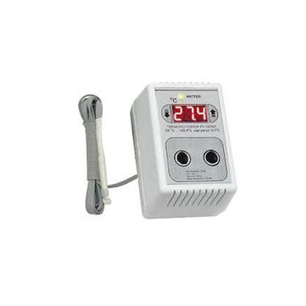
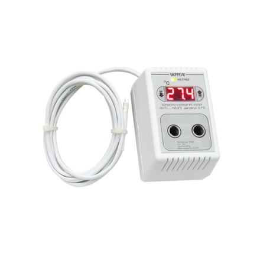
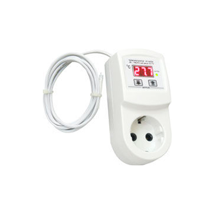
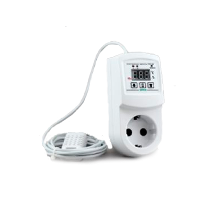

В гровинге работает правило: «Чему нельзя измерить, тем нельзя управлять». Без специальных приборов вы действуете вслепую, что часто приводит к блокировке питательных веществ (nutrient lock) и гибели урожая.
Главные приборы гровера

pH-метр
Измеряет кислотность воды и почвы. Если pH выходит за пределы нормы, корни перестают усваивать удобрения, даже если их в почве много.

TDS / EC-метр
Показывает общее количество растворенных солей в воде (концентрацию удобрений). Помогает избежать «перекормки» и химических ожогов корней.

Терморегулятор

Автоматически включает обогрев или вентиляцию при достижении критических температур, поддерживая стабильный климат 24/7.
Почему важен уровень pH?

Каждый субстрат имеет свой идеальный диапазон pH, при котором элементы усваиваются максимально эффективно:
- Почва (Земля): pH 6.0 — 7.0. В этой среде лучше всего усваиваются микроэлементы.
- Гидропоника / Кокос: pH 5.5 — 6.5. Здесь более кислая среда необходима для доступности азота и фосфора.
Внимание: Если pH отклоняется от нормы, растение начинает испытывать дефицит элементов, что проявляется в пятнах или желтизне листьев.

Советы по эксплуатации приборов

Калибровка
pH-метры со временем «сбиваются». Раз в месяц проводите калибровку с помощью специальных буферных растворов (pH 4.0 и 7.0).

Хранение
Электрод pH-метра никогда не должен пересыхать. Храните его в специальном растворе KCL или дистиллированной воде.

Точность
 pH 600.png)
Дешевые «желтые» метры часто врут. Для серьезного гровинга рекомендуем использовать цифровые приборы с высокой точностью (±0.1 pH).
🌿 Хотите собрать полный комплект?

Подберите освещение, вентиляцию и приборы контроля в одном разделе.
Все оборудование